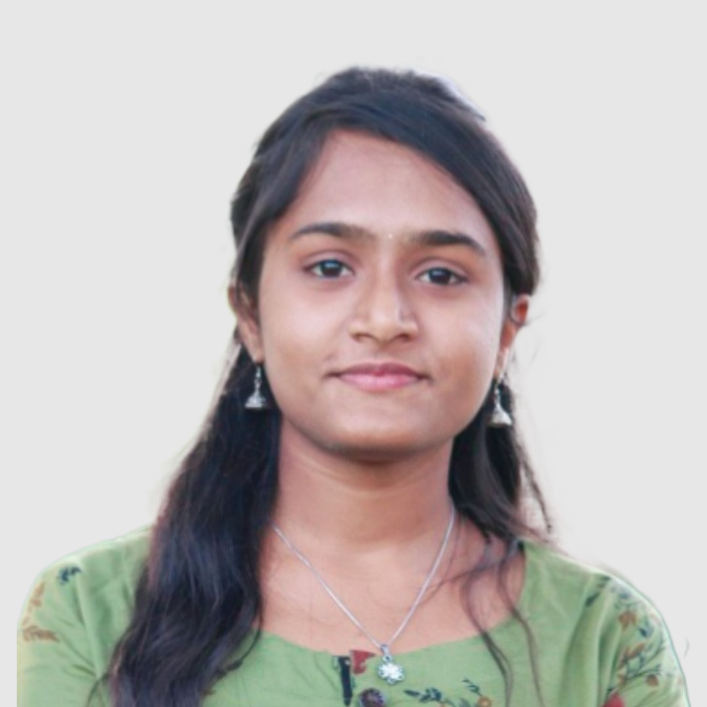

Myself Divyashree J, an hardworking engineering graduate from college Channabasaweshvara institute of technology with overall CGPA of 7.97.
currently pursuing Java full stack course in Tap academy coaching centre. I have good understanding of c,c++,java,sql,htm and css programming
languages apart from technical skills I am a quick learner and an enthusiastic person.Coming to my family we are in four in my hometown
kollegal, my father is a selfemployeed, my mother is a homemaker, and an younger brother.In my free time I love to do drawings and craftworks.
My current goal is to get a good job in a IT industry to expertize my skills and to learn new things which can benefit to organisation too.
This is all about myself.
Nextpage